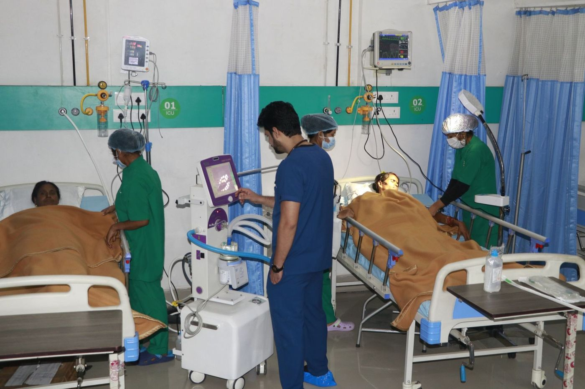

Safe surgery, explained clearlyसुरक्षित सर्जरी, साफ़-साफ़ समझाकर
Our General Surgery department treats problems that need an operation — gall bladder stones, appendix, hernia, piles and fistula, lumps, abscesses and injuries. Planned operations are scheduled after tests; emergencies are operated on day or night.हमारा जनरल सर्जरी विभाग उन बीमारियों का इलाज करता है जिनमें ऑपरेशन चाहिए — पित्ताशय की पथरी, अपेंडिक्स, हर्निया, बवासीर व भगंदर, गाँठ, फोड़ा और चोट। योजनाबद्ध ऑपरेशन जाँच के बाद तय होते हैं; इमरजेंसी ऑपरेशन दिन-रात होते हैं।
Wherever it is suitable, our surgeons use laparoscopic (keyhole) surgery. Instead of one long cut, the operation is done through small ports with a camera, which usually means less pain, smaller scars, fewer wound infections and an earlier return home.जहाँ उपयुक्त हो, हमारे सर्जन लैप्रोस्कोपिक (दूरबीन) सर्जरी करते हैं। एक लंबे चीरे की जगह कैमरे के साथ छोटे छेदों से ऑपरेशन होता है, जिससे आमतौर पर कम दर्द, छोटे निशान, कम संक्रमण और जल्दी घर वापसी होती है।
Before surgery, the surgeon explains the operation, the risks and the expected recovery, and you sign a consent form only when you understand it. After you go home, our Home Care team can do your dressings.ऑपरेशन से पहले सर्जन ऑपरेशन, जोखिम और रिकवरी समझाते हैं, और समझने के बाद ही आप सहमति पत्र पर हस्ताक्षर करते हैं। घर जाने के बाद हमारी होम केयर टीम ड्रेसिंग कर सकती है।

Common operationsआम ऑपरेशन
Book a visit if you noticeये दिखे तो डॉक्टर को दिखाएँ
- Pain in the upper right stomach after mealsखाने के बाद पेट के दाहिने ऊपरी हिस्से में दर्द
- A bulge in the groin or near the navelजांघ के जोड़ या नाभि के पास उभार
- Bleeding or pain while passing stoolमल त्याग के समय खून या दर्द
- A lump that is growingबढ़ती हुई गाँठ
- Pain in the lower right stomach with fever or vomiting (come to Emergency)पेट के दाहिने निचले हिस्से में दर्द के साथ बुखार या उल्टी (इमरजेंसी आएँ)
What to bringक्या साथ लाएँ
- Aadhaar or another photo IDआधार या कोई फ़ोटो पहचान पत्र
- Ayushman card, if you have oneआयुष्मान कार्ड, अगर हो
- Old prescriptions, reports and X-raysपुराने पर्चे, रिपोर्ट और एक्स-रे
- A list of medicines you take nowअभी ली जा रही दवाओं की सूची
- A family member, if the patient is very unwellमरीज़ ज़्यादा बीमार हो तो परिवार का कोई सदस्य
From first visit to recoveryपहली मुलाक़ात से रिकवरी तक
Laparoscopic surgeryलैप्रोस्कोपिक सर्जरी
Keyhole surgery through 3 small ports with a camera.कैमरे के साथ 3 छोटे छेदों से दूरबीन सर्जरी।
Operation theatreऑपरेशन थिएटर
For planned and emergency operations.योजनाबद्ध व इमरजेंसी ऑपरेशन के लिए।
Pre-operative testsऑपरेशन से पहले जाँच
Blood tests, X-ray and ultrasound in-house.खून की जाँच, एक्स-रे व अल्ट्रासाउंड अस्पताल में ही।
Dressing at homeघर पर ड्रेसिंग
Post-operative dressing through Home Care.होम केयर से ऑपरेशन के बाद ड्रेसिंग।
Post-operative wardऑपरेशन के बाद वार्ड
Nursing care and pain control after surgery.सर्जरी के बाद नर्सिंग व दर्द नियंत्रण।
ICU backupICU सहायता
ICU support for high-risk patients.ज़्यादा जोखिम वाले मरीज़ों के लिए ICU।
What happens, step by stepक्या होता है, कदम-दर-कदम
- Consultationपरामर्शThe surgeon examines you and explains whether you need an operation.सर्जन जाँच कर बताते हैं कि ऑपरेशन चाहिए या नहीं।
- TestsजाँचBlood tests, ultrasound or X-ray, and a fitness check.खून की जाँच, अल्ट्रासाउंड या एक्स-रे, और फ़िटनेस जाँच।
- Plan & consentयोजना व सहमतिDate, type of surgery, anaesthesia and costs or Ayushman cover explained.तारीख़, सर्जरी का प्रकार, बेहोशी और ख़र्च या आयुष्मान कवर समझाया जाता है।
- OperationऑपरेशनDone in our operation theatre; laparoscopic when suitable.हमारे ऑपरेशन थिएटर में; उपयुक्त हो तो दूरबीन से।
- RecoveryरिकवरीWard care, discharge advice, stitch removal and dressings.वार्ड में देखभाल, छुट्टी की सलाह, टाँके खुलना और ड्रेसिंग।
Experienced specialists, every dayअनुभवी विशेषज्ञ, हर दिन
Doctor schedules change from day to day. Call or WhatsApp 99428 15500 for today's doctor and OPD timings.डॉक्टरों का समय रोज़ बदल सकता है। आज के डॉक्टर व ओपीडी समय के लिए 99428 15500 पर कॉल या व्हाट्सऐप करें।
Before and after an operationऑपरेशन से पहले और बाद
Fastingखाली पेट
Don't eat or drink for the hours the team advises before surgery.ऑपरेशन से पहले टीम द्वारा बताए घंटों तक कुछ न खाएँ-पिएँ।
Tell us your medicinesअपनी दवाएँ बताएँ
Especially blood thinners, diabetes and BP medicines.ख़ासकर खून पतला करने, शुगर और बीपी की दवाएँ।
Walk earlyजल्दी चलें
Gentle walking after surgery helps recovery and prevents clots.सर्जरी के बाद हल्का चलना रिकवरी में मदद करता है।
Keep the wound cleanघाव साफ़ रखें
Come back if it becomes red, swollen or starts discharging.लाल, सूजा या मवाद आए तो दोबारा दिखाएँ।
Covered under Ayushman Bharat at AHS.AHS में आयुष्मान भारत के अंतर्गत शामिल।
Eligible families can get treatment in this department without paying. Bring your Ayushman card or Aadhaar.पात्र परिवार इस विभाग में बिना पैसे इलाज करा सकते हैं। आयुष्मान कार्ड या आधार साथ लाएँ।
Frequently askedअक्सर पूछे जाने वाले सवाल
What is laparoscopic surgery?लैप्रोस्कोपिक सर्जरी क्या है?
The surgeon works through 3 small cuts using a camera and fine instruments, instead of one large cut. Most patients have less pain and go home sooner.बड़े चीरे की जगह सर्जन कैमरे और बारीक उपकरणों से 3 छोटे छेदों से ऑपरेशन करते हैं। ज़्यादातर मरीज़ों को कम दर्द होता है और जल्दी छुट्टी मिलती है।
Is surgery covered under Ayushman Bharat?क्या सर्जरी आयुष्मान भारत में शामिल है?
Yes. General Surgery is covered under Ayushman Bharat at AHS for eligible families.हाँ। AHS में पात्र परिवारों के लिए जनरल सर्जरी आयुष्मान भारत में शामिल है।
Do you offer robotic surgery?क्या रोबोटिक सर्जरी होती है?
Not yet. Robotic surgery is planned for the future; we will announce it here when it starts.अभी नहीं। रोबोटिक सर्जरी भविष्य की योजना है; शुरू होने पर यहाँ बताया जाएगा।
How long will I stay in hospital?कितने दिन अस्पताल में रहना होगा?
After many laparoscopic operations, patients go home in 1–3 days. Your surgeon will tell you what to expect for your operation.कई दूरबीन ऑपरेशन के बाद मरीज़ 1–3 दिन में घर जाते हैं। आपके ऑपरेशन के बारे में सर्जन बताएँगे।